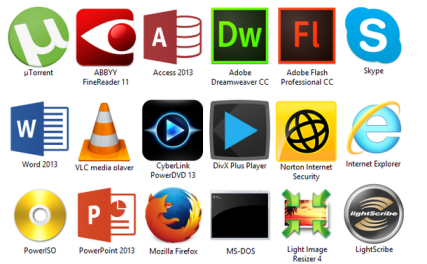
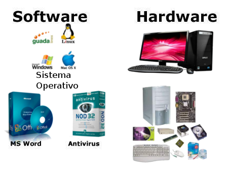

Elemento de un sistema de informacion computacional
Equipo computacional:
hardware necesario para que el sistema de informacion funcione, integrado por comoutadoras y equipo periferico conectado a ellas.

Recurso humano:
son las personas que interactuan con el sistema de informacion, suministran datos o utilizan el sistema para generar datos.
Fuente:
son los datos e informacion que se introducen en el sistema, es decir, son las entradas requeridas para que el sistema informatico funcione.
Programas:
software ejecutado por la computadora, el cual procesa la informacion de entrada para generar los resultados esperados.

Telecomunicaciones:
abarca el software y hardware que permite la transmision en forma electronica de texto e imagenes, entre otros.

Politicas y reglas de operación:
aplicadas alos procedimientos y mecanismos para hacer que una aplicacion de computadora trabaje de acuerdo con estas o regir la parte funcional del proceso administrativo de la empresa.
Atras
Siguiente